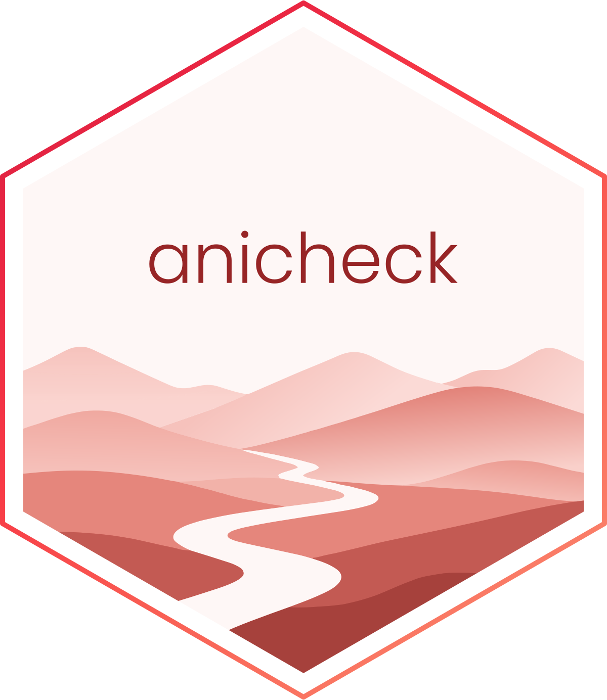

Check the Distribution of Tracking Confidence
Source:R/check_confidence.R
check_confidence.RdSummarises the per-frame tracking confidence (or likelihood) of each
keypoint. A keypoint with a low median or a long low tail is one the tracker
was often unsure about - exactly the points whose coordinates deserve
suspicion. This check reduces the confidence column to a per-keypoint
distribution, and plot.check_confidence() draws it as a violin.
Usage
check_confidence(data, ...)
# Default S3 method
check_confidence(data, ...)
# S3 method for class 'aniframe'
check_confidence(data, n = 256, ...)Value
A data frame of class check_confidence with one row per
(keypoint, density grid point): the identity columns, the confidence
value, and its kernel density. A per-keypoint five-number summary (with
n, mean, sd) and the grouping columns are stored as attributes. Use
summary() for a trimmed overview.
Details
The distribution is reduced to a compact kernel-density estimate (a fixed-size grid) per keypoint, plus a five-number summary, so the object stays small however long the recording - the violin is drawn straight from the stored density.
This is the data-generating half of the check. The plotting method
(plot.check_confidence()) lives in anivis, mirroring the
performance / see split in easystats. (check_*() functions are
destined for the anicheck package; they are kept here for now for
convenience.)
Examples
af <- anicore::as_aniframe(data.frame(
keypoint = rep(c("head", "tail"), each = 50),
time = rep(1:50, 2),
x = rnorm(100),
y = rnorm(100)
))
af$confidence <- c(rbeta(50, 8, 2), rbeta(50, 2, 5))
check_confidence(af)
#>
#> ── Check: tracking confidence
#> Confidence for 2 keypoints (median [min]):
#> • head: 0.83 [0.49]
#> • tail: 0.27 [0.03]